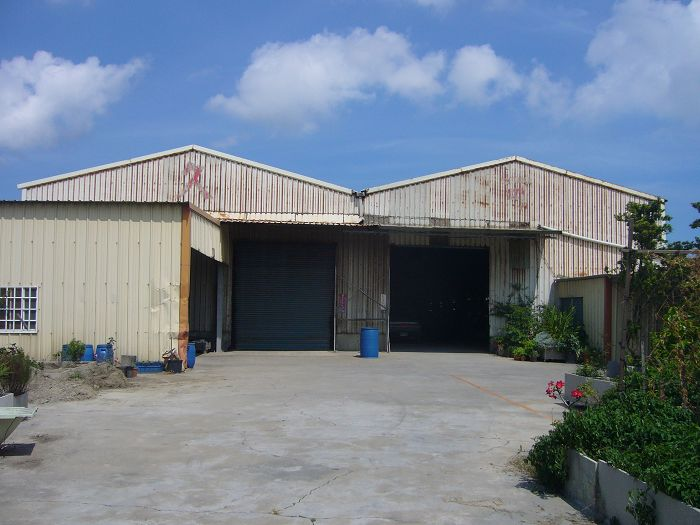
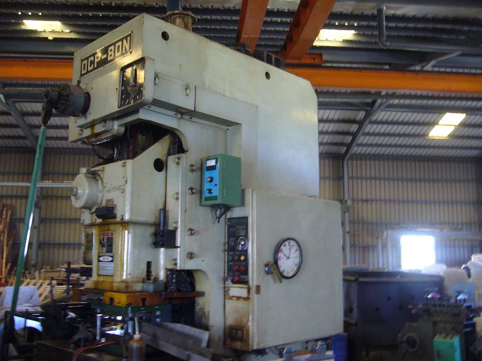
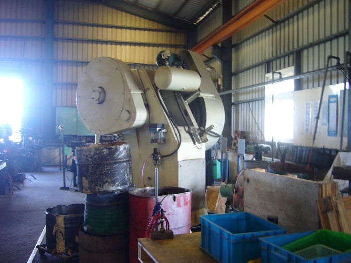
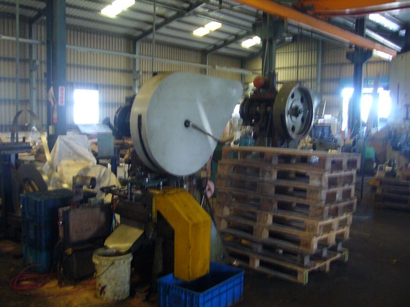
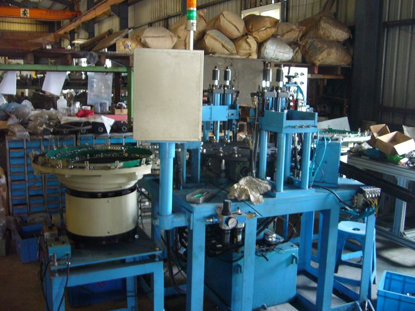

這 是 久 可 的 舊 工 廠 ， 因 為 現 在 主 要 在 彰 濱 工 業 區 ，外 表 看 似 破 舊 ， 但 還 是 有 人 在 裡 面 看 管 。
 
這 是 四 張 是 因 為 是 舊 工 廠 ， 所 以 設 備 不 向 新 工 廠 一 樣 完 善 。
 
久 可 是 製 作 五 金 的 行 業 ， 常 銷 售 於 歐 洲 、 日 本 等 其 他 國 家 . . . . . . . . . . . . . . . . 。
<--回寓埔村首頁 |